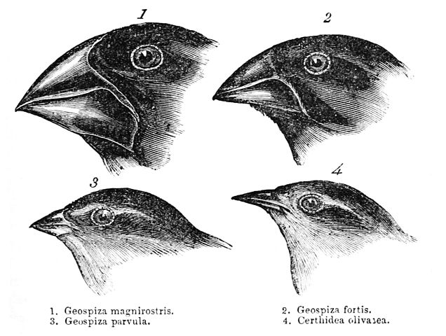
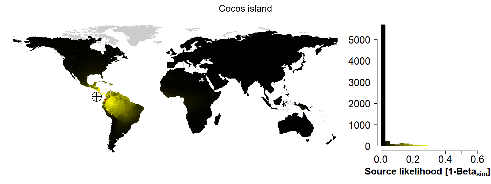

Island Biogeography
My PhD work focused on the fascinating topic of island biogeography. The reason why biologists love to study islands is their geographic isolation. Emerging as sterile rocks from the ocean floor, islands are populated over long time spans by only those species that manage to cross the open sea. For the few species that succeed, a completely new environment – typically with fewer competitors or predators – awaits, leading to spectacular evolutionary shifts.
In my research, I looked closely at what drives changes in the composition of species communities on islands and on the mainland. Specifically, I wanted to know whether different species occur in different places because they cannot get everywhere (dispersal limitation) or because they cannot live everywhere (climatic limitation). I used generalized dissimilarity models , an extension generalized linear models, to tease apart the effects of geographical and climatic factors on the similarity of plant communities at a global scale. Interestingly, islands worldwide harbored a much more similar set of species than mainland regions, pointing towards dispersal limitation being the dominating factor that prevents species from colonizing islands. In a follow-up study, I used the same class of models to predict the geographical source of colonization of an island based on a set of climatic and geographical variables. Furthermore, I showed how these predictions can serve as a null model to make informative comparisons between island and mainland communities in any dimension, e.g. taxonomic composition, genetic diversity or morphological characteristics.
This work was primarily based on GIFT, a biodiversity database that colleagues and I developed during my PhD studies. To learn more about my involvement in different database projects, see here .